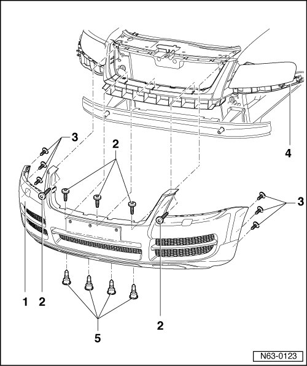
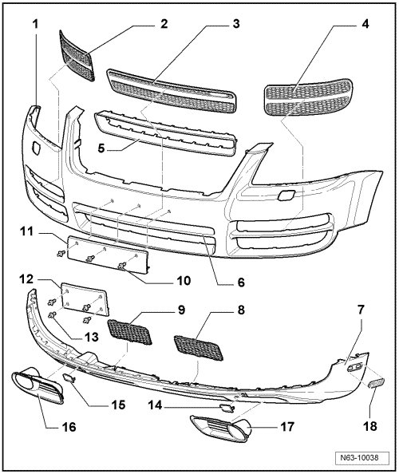
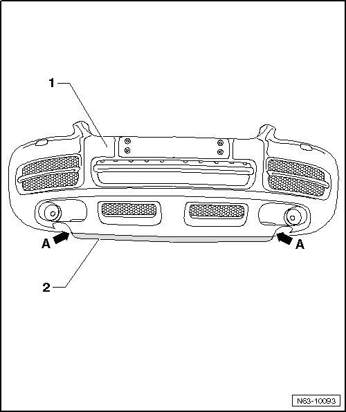
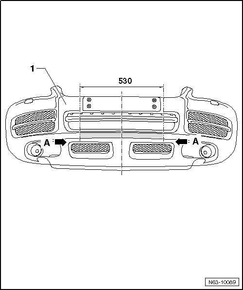
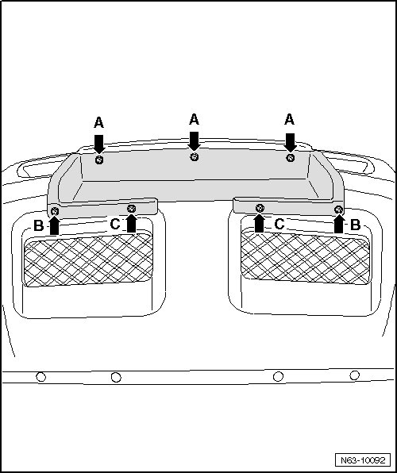
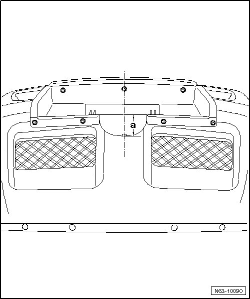
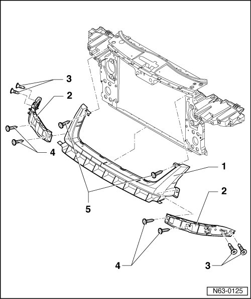
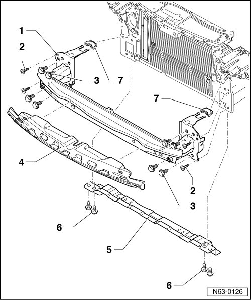

Front Bumper Overview, through 10.2006
Front Bumper, through 10.2006
--> [ Bumper Cover, Servicing ]
--> [ Bumper Cover Assembly Overview ]
--> [ Front Bumper Attachments ]
--> [ Front Bumper Cover, Preparation for Vehicles with Underbody Impact Guards ]
--> [ Front Bumper Cover, Preparation for Vehicles with Cable Winch ]
--> [ Front Bumper Substructure ]
--> [ Bumper Carrier Assembly Overview ]
--> [ Bumper Carrier with Cable Winch Mount Assembly Overview ]
Bumper Cover, Servicing
• Before replacing the bumper cover, see if it is possible to repair the damage.
Bumper Cover Assembly Overview
• Due to model variations, small deviations must be considered during removal and installation.

1 Cover
• Material - PP/EPDM
2 Bolt
• Quantity: 5
• 1.5 Nm
3 Bolt
• 5 per side, three of which are for the wheel housing liner
• 1.5 Nm
4 Guide trim
5 Bolt
• Quantity: 4
• 6 Nm
Front Bumper Attachments
• Due to model variations, small deviations must be considered during removal and installation.

1 Cover
• Material - PP/EPDM
• Removing, refer to --> [ Bumper Cover ] Front Bumper, through 10.2006
2 Right cover
• Clipped in cover.
• Only to be removed from removed bumper.
3 Center cover
• Clipped in cover.
• Only to be removed from removed bumper.
4 Left cover
• Clipped in cover.
• Only to be removed from removed bumper.
5 Decorative frame
• installed only on model variations without a center bar - 6 -.
• Only to be removed from removed bumper.
6 Center bar
• Depending on model variations, the center bar must be cut out using workshop tools.
7 Spoiler
• Clipped in cover.
• Material PC/ABS
• Only to be removed from removed bumper.
8 Left vent grille
• Clipped into spoiler.
9 Right vent grille
• Clipped into spoiler.
10 Spreader clip
• Quantity: 3
11 License plate holder
• Material PC/ABS
• Attaching:
- Hold license plate holder up to bumper and center.
- Mark the mounting points and drill 8 mm dia. holes. Do not drill deeper than 12 mm.
- The license plate holder is fastened with 3 spreader clips - 10 -.
12 License plate holder
• Material PC/ABS
• US vehicles only
• Attaching:
- Hold license plate holder up to bumper and center.
- Mark the mounting points and drill 8 mm dia. holes. Do not drill deeper than 12 mm.
- The license plate holder is fastened with 4 spreader clips - 13 -.
13 Spreader clip
• Quantity: 4
• Only for license plate holder for USA vehicles.
14 Left towing eye cover
15 Right towing eye cover
16 Left radiator grille cover
• Clipped into spoiler.
17 Right radiator grille cover
• Clipped into spoiler.
18 Reflector
• Only USA vehicles
• Left and right
• Clipped into spoiler.
• Can be carefully removed from exterior using a plastic wedge.
Front Bumper Cover, Preparation for Vehicles with Underbody Impact Guards
• Only on vehicle through 10.2006
• On vehicles with underbody impact guards, the spoiler lip on front bumper cover must be removed for safety reasons.
Removing spoiler lip

- Cut off spoiler lip - 2 - along edge - arrows A - of bumper cover - 1 - using body repair saw and deburr the cutting edge.
Front Bumper Cover, Preparation for Vehicles with Cable Winch
• Only on vehicle through 10.2006
Cut-out for cable winch
• Depending on vehicle equipment, route the various lines and hoses on interior of bumper cover.
• Be sure not to cause damage when cutting the cut-out for the cable winch.

- Transfer - dimension 530 mm - for width (center of dimension 530 mm coincides with center of bumper cover - 1 -) onto bar of center ventilation cut-out and continue up to edge - A arrows - of ventilation grille cut-out.
- Cut out bar of center ventilation cut-out using body repair saw and deburr the cut edge.
- Cut out region beneath center ventilation cut-out using body repair saw and deburr the cut edge.
Cover Frame Assembly

- Insert cover frame into cut-out of bumper cover.
- Align cover frame centered in cut-out of bumper cover and flush to license plate mount.
- Drill holes for the upper bolts - A arrows - using a dia. 6.5 mm drill bit through holes in cover frame and into bumper cover.
- Bolt cover frame and bumper cover - A arrows -.
- Align lower mount of cover frame on bumper cover.
- Drill holes for the lower bolts - B arrows - and - C arrows - using a dia. 6.5 mm drill bit through holes in cover frame and into bumper cover.
- Bolt cover frame and bumper cover - B arrows - and - C arrows -.
Cut-out for cover

- In order to be able to remove cover of roller window, a circular cut-out must be cut out of bumper cover using body repair saw as depicted in the illustration.
Dimension - a - of edge between cover frame and depth of circular cut-out is 62 mm.
- Deburr cut edges.
Front Bumper Substructure
• Due to model variations, small deviations must be considered during removal and installation.

1 Support piece
• Disassemble only with guide trims removed.
2 Guide trim
3 Bolt
• Quantity: 4
• 6 Nm
4 Bolt
• Quantity: 4
• 1.5 Nm
5 Bolt
• Quantity: 2
• 1.5 Nm
Bumper Carrier Assembly Overview
• Due to model variations, small deviations must be considered during removal and installation.

1 Bumper carrier
• Removing, refer to --> [ Bumper Carrier ] Front Bumper, through 10.2006
2 Bolt
• Quantity: 4
• 1.5 Nm
3 Bolt
• Quantity: 8
• 65 Nm
4 Foam strip
• Self-adhesive
5 Cross member
6 Bolt
• Quantity: 4
• 25 Nm
7 Retaining clip
Bumper Carrier with Cable Winch Mount Assembly Overview
• Installed only on vehicles through MY 10.2006
• Further information on bumper carrier with cable winch mount can be obtained via Volkswagen Technical Helpline
Bumper Carrier with Cable Winch Mount Assembly Overview

1 Bumper carrier with cable winch mount
• Removing and Installing, refer to--> [ Bumper Carrier with Cable Winch Mount ] Front Bumper, through 10.2006
2 Bolt
• 2 pieces per side
• Tightening specification: 1.5 Nm
3 Bolt
• 4 pieces per side
• Tightening specification: 65 Nm